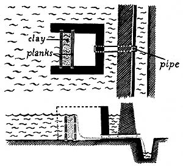

Copyright © 1973 by John and Sally Seymour, Introduction copyright © 1973 by Schocken Books, Inc.
Ah, the vicissitudes of time. Four years ago, when there were NO currently relevant small-scale-farming introductory handbooks available, many of us welcomed the publication of Richard Langer's Grow It! with open arms. Now that we're all older and more experienced, however, some folks find it increasingly easy to criticize that breakthrough beginner's guide (see the Feedback sections of MOTHER NOS. 23, 24 and 25).
Which brings us to another breakthrough book that is just as important (probably more so) now as Grow It! was two years ago . . . and which may well come up for its share of criticism in another 24 months or so.
Be that as it may, John and Sally Seymour's record of 18 successful years on a shirttail-sized homestead in England is important now and should offer welcome encouragement to today's back-to-the-landers . . . both real and imaginary. I started serializing the book in my No. 25 issue and I'm sure that many readers will want a personal copy for their home libraries.-MOTHER.
. . . flowers, and showers, and stomachs, and meat, and content, and leisure to go a-fishing.
IZAAK WALTON
The industrial working man's sport of catching fish out of freshwater canals, lakes and streams, weighing them, and throwing them back again, is as puerile as pulling wings off flies, but I suppose it is better than watching hired men playing football, for at least it gets its devotees away from a crowd. The men who do it will solemnly assure you that these fish are not edible anyway, and further that if they throw them back it will keep the stocks of fish up so other anglers will have a chance to catch some. They are wrong on both counts. There is no freshwater fish that lives in England that I know of that is not excellent to eat. And to crop, or harvest, the fully grown fish is good for the stocks, in that it gives the younger ones a chance to live and thrive. It is very good for the health and welfare of a stock of fish in any piece of water to remove the full grown fish that have had a chance to breed once or twice and allow the younger generations some room.
I have eaten most kinds of English freshwater fish, very many kinds of African ones, and in the Burma jungle during the war we used to kill far more fish with our hand grenades than we did the enemy. I have never yet found a freshwater fish that was bad to eat. Some people manage to persuade themselves into thinking that freshwater fish taste "muddy". But in sober fact freshwater fish do not taste "muddy". It is all in the imagination. If there is still anxiety on this score, however, freshwater fish from muddy places can be let to swim in clean water overnight or longer before cooking, as is done in France sometimes with carp.
There are plenty of ways of taking fish far more effectively than by "angling" but most of them are against the laws of this country. As they are not against the laws of every country though it is quite permissible to describe them and-who knows?-maybe the laws of this country might change one day; the laws of Man are not immutable, if those of God or Nature are. We will therefore discuss some methods of taking the better edible freshwater fish, fish by fish.
The salmon is the king of freshwater fish and that nobody would try to dispute. He spends most of his adult life at sea and is in far better condition caught at sea if mature and off his homeland, for he is at his prime, clean and full of vigour. The monofilament net with a mesh of 5-1/2 inches has made the taking of salmon at sea practical, and shown that there is a greater stock of salmon at sea than had ever been thought. The salmon comes into fresh water to spawn. In an ideal world, if the true welfare of salmon were really considered, I believe he should be netted at sea and left severely alone while in fresh water, for he is there strictly for breeding. The spawning rivers would, of course, have to be kept clear of obstruction and unpolluted, no doubt by the State, for a major incentive to do so would be lost.
But nevertheless we do catch him and eat him when he has entered the rivers, and the sooner after he has entered the fatter and better he will be. In countries where there is no law against it, netting is the best way of taking fresh-run salmon. The new monofilament nets of man-made fibre are perfect for this. If put across a stream at night (the salmon lay up in the day, move upstream at night) salmon will swim into it and gill themselves. For salmon a net of 5-1/2 inches is used (4-1/2 inches is better for small salmon and sewern, or sea trout), six meshes deep, mist green colour, hung on head rope of 1-1/2 mesh for two (which is a way of saying the net is bunched up on the head rope-not pulled tight). The head rope contains plastic floats just sufficient to keep it up and the foot rope just sufficient small leads to keep it down.
Gaffing is the method of taking fresh-run salmon most used by poachers in this country. The gaff is a hook about 3-1/2 inches across the mouth and has a barb on it. A gaff with no barb is no good-you will simply wound fish, which is unforgivable. It is not fixed permanently to a stick but concealed in a pocket, and it has a line attached to its eye. The poacher walks slowly along the river bank gazing intently into any deep water near the bank. Under overhangs, under rafts of sticks, under submerged roots of trees are the places. He must gaze intently and long into one place, for a salmon is very hard to see. Many poachers wear polaroid glasses and these are an enormous help for they cut out the glare of the sky on the water. When the poacher sees his fish he goes and cuts a light stick the right length, lashes his hook to one end of the stick with its own line, takes the loose end of the line (which has a loop in it) up to the other end of the stick and puts the loop on his wrist. Very carefully he leans over, pushes the gaff into the water, and gaffs the salmon in its middle. He lets go of the stick, the line unwinds and releases the stick from the gaff and the poacher is left with his salmon on the hook and the hook tied to his wrist by a long line. He hauls the fish in, gets him high up on the bank, and bashes him on the head with a priest if he has one (a priest is a small club-it "administers the last rites"), or with a well-aimed blow from the foot. He then conceals the gaff in his pocket again, conceals the fish in the undergrowth and starts to worry about how to get it home without being seen. Of course if he has a fishing rod with him, and has a licence, he just carries the salmon home openly and says he caught it on a "Butcher's Glory" or some such artifact and gaffed it to get it out of the water.
Some poachers poison rivers by liming, or cyanide, or other disgusting substances. I would send all such poachers straight off to Siberia. Such practices are absolutely unforgivable, for they kill every fish in the water, great and small. To take the odd salmon with the net or the gaff may be against the laws of Man but it is not against the laws of Nature or of God. To poison water is nothing less than blasphemy, and a deadly sin.
Now having caught your salmon (legitimately, with a fly of course, no poaching methods for us) you have to cook it. If you want it cold, put it in a pan, cover with water, vinegar, and olive oil in equal parts, add bay leaves and pepper and salt, bring to boil, simmer for ten minutes per pound of fish. Let it cool in the cooking liquid.
To smoke Salmo salar (and this is what you should really do with it because there is just nothing like real smoked salmon. The "smoked salmon" you buy nowadays is often not Salmo salar at all but a distant relative that is imported from Japan in enormous frozen blocks then half smoked and dyed to make it look like real salmon. Also, smoked stuff can never be deep frozen and still taste any good):
Fillet but leave the lug bones on.
Remove ribs; this is difficult but if you get your salmon you will soon see how to do it. You have to trim the flesh away a little and pull the ribs out with a pair of pliers. String through the shoulder. Carefully score through the skin at the thickest part so the salt can penetrate. Lay fillets on a layer of fine salt skin-side down and put 1/2 inch of salt on cut surface. Start with 1/2 inch at thickest part-taper off to hardly any salt on tail.
Leave in salt 12 hours for a 1-1/2 lb. to 2 lb. fillet, 18 hours for a 3 to 4 lb. fillet, 24 hours for a 5 lb. fillet or over. These times are terribly important. But if the underlying flesh (the flesh under the surface) still feels soft give more time in the salt. Wash the salt well out of them and dry. Smoke for 24 hours at 70° F. (21 °C.), then for 12 hours at 80° F. (27°C.) in light smoke.
The fillet should lose 10 per cent of weight in salting and 10 per cent in smoking.
Some smokers rub on molasses, others brown sugar; some sprinkle saltpetre, some pour rum on. I prefer to pour the rum down my throat and wipe the fillets lightly with olive oil before and after smoking. Both rum and oil do more good that way.
There is little to say about trout, beyond that any country boy in the trout areas of Britain knows how to tickle them and I have a friend who pokes them out of holes under tree roots or rocks with two sticks which have an onion net between them. They fly out into the onion net.
To smoke trout: gut and clean well; soak 1 hour in 80 per cent brine; pierce through eyes with a metal speat and prop belly open with a match stick; put in smoke still wet at 90°F. (32°C.) for half an hour; give them two hours at 180°F. (82°C.). They are then "cooked smoked" and should, like smoked salmon, be eaten cold and raw.
Eels are the most underestimated fish in Britain. They are highly prized in every country of the world that I know of except Britain and Norway. The eel is perhaps the most delicious and nutritious of freshwater fishes.
Eels, by the way, can be taken in "hives", which are torpedo-shaped baskets of withies with inverted funnels in one or both ends of them which are sunk below the water and baited. Nowadays most people make cages of fine-mesh wire netting to do the job instead. Fresh chicken guts make a good bait, so do sea-water shrimps or their heads. Eels can also be caught with the long-line: that is a long line with many hooks along it. Bait the hooks with worms and leave the line down overnight. I have filled many a tin bath up with eels by babing. To do this you collect a bunch of worms, thread each worm on a piece of knitting wool, tie them all up in a knot or "bob", tie them on the end of a string and hang the string from a short stick. Go out in a boat in the shallow of an estuary and lower the "bob" to the bottom. After a minute or two bring it over the boat (and the tin bath), give it a sharp shake and you will shake the eels that are clinging to the bunch of worms off into the bath. But the eels you want for smoking are the big fat silver eels that are on their way off to sea after their seven or eight years in fresh water to lay their eggs in the Sargasso Sea. Eel traps on the weirs of watermills used to catch these, and many a miller paid his rent with his eels, and many a mill owner still could, if he smoked them before he sold them. To cook fresh eels: half skin, stuff, and pull the skin back to hold the stuffing, hold eels with a rag.
To smoke eels: gut (do not skin), clean, lay in dry salt for 12 hours; hang on sticks and dip in boiling water for a few seconds. This makes them open out; smoke at 140°F. (60°C.) for from 2 to 4 hours according to size.
For the cooking of all other freshwater fish I will refer you to The Compleat Angler, the recipes in which make one drool at the mouth.
The way in which freshwater fish can make a really important contribution to the self-supporting community is by fish farming. An acre of fish farm in the tropics will yield five tons of fish per year (half a ton of beef is a good yield off an acre of the very best grassland), and the fish farms in cold East Germany yield 242 kilograms per hectare per year. In days gone by fish farming was a very important branch of animal husbandry in Britain. John Tavern, writing in 1600, recommends making big shallow ponds, keeping the ponds flooded one year and dry the next. When dry, plough and seed their beds with clover and then graze with cattle: "their dung and stale together with the natural force of the Sunne . . . will breed flies and bodes of divers kindes and sortes", which the subsequent fish will fatten on. You should drain your pond to be dry about the first of November. Take the best fish thus exposed by draining the pond to your stew pond, which is a small, deep pond for storing fish for the winter: deep so the frost won't kill them. They will keep there until you want to eat them. The smaller fish you put in the pond that you have newly flooded and which has had cattle grazing on it all summer. They will thrive in this and grow and fatten for next winter. Taverner says the ponds should be under six feet deep and on boggy land, fit for nothing else (but 4 feet is deep enough). He advises only to handle fish in cold weather. The fish he recommends are carp, bream, tench and perch, but he has reservations about bream because they spawn too freely and overstock the pond. If you have pike you can afford bream-the pike will keep them within reason. He recommends feeding fry with oatmeal. A carp will commence eating when 1 inch long. Old carp, he says, are to get: "sodden barley and mault steeped in water and sodden pease". He liked to have cattle feeding near the fish ponds, geese to keep the grass short and as "good watch dogs", and ducks to do good by keeping weeds down and manuring the water.
Taverner's methods are obviously a good example of proper husbandry: interaction between different crops and animals and interdependence. The fish fertilized the subsequent grassland, the cattle fed the subsequent fish. Modern fish-farming practice is heading back for this sort of husbandry, and all Taverner's recommendations are modern practice.
Carp are the classic stew-pond fish. They don't need running water, live well in small ponds, and are very good to eat. They must have half the food they eat natural pond food, so you must encourage the natural organisms of the pond by throwing in muck or compost. Any kind of animal manure will do and can simply be tipped into the pond but not, of course too much; only enough so that the bacteria of the pond can cope with it comfortably. You can then add a considerable amount of artificial food: oatmeal, barley, corn of any sort. If you put 100 lbs. of trout fry in you can expect to get 450 pounds of fat fish out in three years' time. Schaperclaust (Die Karpfenteichswirtschaft in der Deutch Demokrotischen Republik) says that ponds which have sewage effluent running into them near Berlin are yielding 10,000 kilograms of rainbow trout per hectare per year! Trout need running water according to this writer, from five to ten litres per second into a pond of ,100 square metres. They want at least five feet of water. Only rainbow trout can be fed on sewage effluent-brown or brook trout need clean water. You can stock up to five trout per square metre of water surface. Trout are carnivorous and must be fed on finely ground meat or fish. You can buy proprietary trout food in England. You can buy young trout from trout farms, or breed your own in indoor tanks by squeezing the roe from an adult hen and squeezing into it the milt from an adult cock.
I have never done fish farming, but simply write so much about it in the possibility that it will arouse interest in someone with more energy than I have. An excellent book on this subject, from which I have drawn much of the above, is Fish Culture by C.F. Hickling (Faber and Faber) and another is Fish and Invertebrate Culture by S.H. Spotte (Wiley, New York). (For method of controlling water in ponds see illustration below.)
But anybody can improve the carrying capacity of a trout stream by building some small dams to cause deep "holding pools", or adapt an old mill pond by letting loose some fish fry in it and encouraging them by throwing in some crushed corn from time to time, or fish meal or meat meal for trout. From there it might develop into something more systematic and scientific in the true sense of the word. There is a lot of swampy land which could only be drained at a prohibitive cost but which, with the help of a bulldozer or mechanical digger, could cheaply be turned into big shallow fish ponds, which could be laid dry every alternate year to provide good grazing for cattle in the summertime. When laid dry it should be heavily limed and dressed with phosphatic manure and sown to clover.
All fish will deep freeze, but do not delude yourself that deep-frozen salmon or trout, for example, bears any relation to fresh fish. And never commit the atrocity of freezing smoked products of any kind.:
|
MONK device forcontrolling water level in fishponds |
 |
|